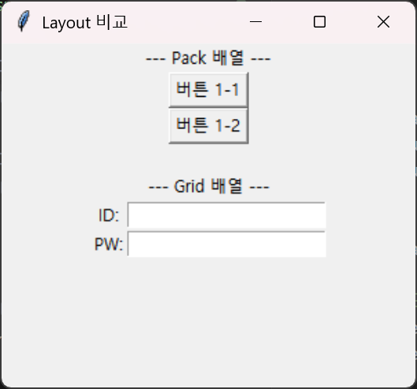
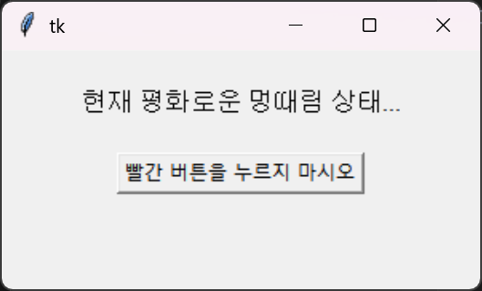

2주차: GUI 심화 - 위젯 배치 알고리즘과 데이터 시각화 뷰어 📊
지난 시간 띄운 창에 위젯을 정교하게 배치하고 정렬하는 레이아웃 매니저의 원리를 이해하고, 로컬 CSV 파일 데이터 분석 플로우와 결합하여 직접 차트를 띄우는 실전 GUI 분석 뷰어를 완성해 보겠습니다.
학습목표
Tkinter 버튼, 텍스트창, 라벨 같은 위젯 부품들을 단순하게 가운데 정렬로 부어버리는 pack()과 엑셀 시트처럼 정교하게 좌표로 꽂아 넣는 grid() 레이아웃의 차이를 배웁니다. 더불어, 화면에 던져놓은 버튼을 눌렀을 때 비로소 파이썬 함수가 발동하게 전선을 이어주는 이벤트 구동(Event-Driven) 방식의 결정체인 command= 파라미터 활용법을 체화합니다.
💡 TL;DR (1분 핵심 요약): 배치와 액션
- 위젯(Widget): 버튼, 입력창, 라벨 등 화면을 구성하는 가장 작은 레고 분자 블록입니다.
- 레이아웃 매니저: 내가 만든 위젯을 빈 도화지(Window) 어디에 꽂을지를 결정하는 자석입니다. (
pack은 김밥 말기처럼 위에서부터 차곡차곡 쌓는 방식,grid는 모눈종이 십자 좌표표에 박아넣는 방식입니다.) - 이벤트 핸들링 (
command=): 껍데기뿐인 버튼에 생명을 불어넣는 전류선 연결 작업입니다. 함수 괄호를 빼먹고 이름만 적어야(command=my_click) 클릭 시점에만 총알이 발사됩니다.
1. 화면 배치(레이아웃)의 양대 산맥
버튼(Widget)을 화면에 그냥 던지면 아무것도 보이지 않습니다. 반드시 팩(pack) 이나 그리드(grid) 라는 레이아웃 매니저 함수를 뒤에 붙여주어야 화면에 본드가 칠해지며 찰싹 달라붙습니다.

예제 1: pack() 블록 쌓기와 grid() 엑셀 정렬
import tkinter as tk
root = tk.Tk()
root.title("Layout 비교")
root.geometry("300x250") # 가로x세로 크기
# ---------------------------------------------
# 1. pack() 방식: 마트료시카 블록처럼 위에서 아래로 중앙 정렬 쑤셔 넣기 (빠름)
tk.Label(root, text="--- Pack 배열 ---").pack()
tk.Button(root, text="버튼 1-1").pack()
tk.Button(root, text="버튼 1-2").pack()
# ---------------------------------------------
# 2. grid() 방식: 정교하게 엑셀 행(Row)과 열(Column) 셀 나누기 (정교함)
tk.Label(root, text="--- Grid 배열 ---").pack(pady=(20, 0)) # 여백용 꼼수
# 별도의 뼈대 프레임(투명한 액자)을 만들고, 그 안에 그리드를 칩니다.
# (하나의 root 창 안에서 pack과 grid를 함부로 섞어 쓰면 에러 쾅 납니다!)
frame = tk.Frame(root)
frame.pack()
tk.Label(frame, text="ID:").grid(row=0, column=0)
tk.Entry(frame).grid(row=0, column=1) # 글자를 입력받는 빈칸
tk.Label(frame, text="PW:").grid(row=1, column=0)
tk.Entry(frame).grid(row=1, column=1)
# 심장 박동(회전목마) 무한 실행 시작!
root.mainloop()

2. 이벤트 드리븐 (Event-Driven)의 마법
사용자가 버튼을 클릭했을 때 어떤 함수를 실행할지 미리 전선(Command)을 연결해 두어야 합니다.

예제 2: 버튼 클릭과 함수 실행 연결
import tkinter as tk
# 1. 동작할 함수 (총알) 미리 장전!
def force_on_click():
# 사용자가 버튼을 클릭하면, 이 회로로 전기가 흐르며 함수 발동!
print("터미널: 앗! 찌릿찌릿! 왼쪽 버튼이 클릭되었습니다!")
# GUI 화면의 라벨 내용을 강제 수정
label_status.config(text="🔥 미사일 발사 완료! 🔥", fg="red")
# ---------------------------------------------
root = tk.Tk()
root.geometry("300x150")
# 2. 라벨 만들기 (처음 상태)
label_status = tk.Label(root, text="현재 평화로운 멍때림 상태...", font=("Arial", 12))
label_status.pack(pady=20)
# 3. 버튼 만들기 (command=force_on_click 코드가 바로 핵심 전선(방아쇠) 역할!)
# 🚨 절대 주의: 함수명 뒤에 괄호를 치는 순간( force_on_click() ),
# 파이썬은 프로그램이 뜨기도 전에 버튼 생성을 하다가 저 함수를 먼저 폭파(실행)시켜 버립니다.
# 방사능 물질(매개변수)이 필요 없는 버튼 연결은 무조건 괄호 생략!
btn = tk.Button(root, text="빨간 버튼을 누르지 마시오", command=force_on_click)
btn.pack()
root.mainloop()

☕ Java vs 🐍 Python 스나이퍼 대결
이벤트 감지 (리스너 연결)의 고통 차이
- Java (
Swing): 자바에서 버튼을 누를 때"hello"를 찍게 하려면ActionEventListener라는 객체 인터페이스 지옥을 만듭니다.button.addActionListener(new ActionListener() { public void actionPerformed(ActionEvent e) { System.out.println("hello"); } });처럼 거대한 익명 인터페이스 클래스 덩어리를 우겨 넣어야 합니다. 코드 줄 수가 무지막지하게 길고 지저분해집니다. - Python (
Tkinter): 자바의 그 무거운 익명 객체를 버리고, 그냥 파이썬의 일급 객체(First-class Object) 특성을 발동시킵니다.def로 함수를 하나 짠 뒤,tk.Button(..., command=함수명)이라는 파라미터 값으로 화살표 포인터 리스트 하나 던져주면 자바의 모든 리스너 오버라이드 과정을 단 한 줄로 철저히 강제 압축시켜버립니다.
🎧 Vibe Coding
🗣️ 학생 프롬프트 (AI에게 이렇게 명령해 보세요): “파이썬
Tkinter를 써서 간단한 ‘비만도(BMI) 계산기’ GUI 창을 만들어줘. 1) 몸무게 입력창(Entry), 키 입력창(Entry) 두 개를 나란히grid()로 예쁘게 배치해. 2) 그 아래에 ‘계산하기’ 버튼을 만들고, 클릭하면calculate_bmi()함수가 이벤트로 발동하게 해 줘. 3) 함수 안에서는entry_weight.get()같은get()문법을 통해 몸무게값 문자열을 쑥 뽑아오고 실수(float)로 형변환한 뒤, 공식(몸무게 / 키의 제곱)으로 식을 풀고 맨 밑에 있는 라벨의 글자를 ‘당신의 BMI는 XX입니다’ 로 변경해 줘.”
코딩 영단어 학습 📝
- Config (Configure): 구성하다, 설정값을 뒤바꾸다. (화면에 이미 뿌려진 라벨(Label)의 글자 내용(
text=)이나 배경색(bg=)을, 버튼 클릭 등 동적인 상황이 발생했을 때 실시간으로 강제로 덮어씌워 바꾸기 위해 호출하는 막강한 업데이트 메서드입니다.) - Pack (팩): 꾸러미를 싸다. (HTML/CSS 퍼블리싱을 모르는 개발자를 위해 파이썬이 던져주는 마법의 상자.
pack()이라고 선언하면 여백이나 공간 계산을 할 필요 없이 윗줄부터 가운데 정렬 차곡차곡 스택처럼 예쁘게 위젯을 쌓아 내립니다.) - Grid (그리드): 격자무늬, 모눈종이. (
pack으로 대충 세팅이 안 되는 까다로운 바둑판, 액셀 테이블형 UI를 짤 때 무조건 꺼내 드는 레이아웃 치트키. 내가 만든 버튼을row=3, column=2의 정확한 좌표 셀(Cell) 박스 안에 때려 넣게 해 줍니다.)
학습목표
지금까지 배운 파이썬의 핵심 3대장 기술을 하나로 융합하는 최종 보스급 미니 프로젝트입니다.
1) 파일 I/O (open()) 기술로 sales.csv 파일을 읽어 리스트로 가공하고,
2) 데이터 시각화 (Matplotlib) 기술로 차트를 그려낸 다음,
3) 이 모든 결과를 GUI 프로그래밍 (Tkinter) 창 위에 버튼과 함께 아름답게 띄워 넣는 완벽한 통합 애플리케이션을 완성해 봅니다.
💡 TL;DR (1분 핵심 요약): 3종 신기의 결합
- 순수 파이썬의 검은색 터미널 창을 벗어나, “결과 보기” 웹 버튼이 달린 번듯한 윈도우 UI(Tkinter)를 먼저 만듭니다.
- 사용자가 버튼을 누르면(
command=), 숨겨두었던 데이터 분석 함수가 발동합니다. - 함수는 하드디스크의
.csv파일을 열고 파싱하여Matplotlib으로 차트를 생성해 화면에 팝업시킵니다!
1. 프로젝트 아키텍처 (어떻게 합칠 것인가?)
자바(Java)였다면 이 세 가지(버튼UI, 파일읽기, 차트그리기)를 합치기 위해 수십 개의 클래스 파일과 아키텍처 설계가 필요했을 것입니다. 하지만 파이썬에서는 이 모든 것이 단일 .py 파일 안에서 함수 블록(def) 하나로 우아하게 통일됩니다.
우리는 윈도우 창(Tk())을 먼저 하나 띄워놓고, 그 안에 커다란 버튼을 하나 박아둘 것입니다. 그리고 이 버튼의 전선(command)을 방금 전 데이터 분석 챕터(06_data_viz_prep)에서 배웠던 차트 생성 함수에 곧바로 연결해버리면 끝입니다!
2. 통합 애플리케이션 코드
🚨 (필수) 패키지 설치 안내 파이썬 기본 내장 모듈인
tkinter와 달리,matplotlib은 외부 시각화 라이브러리입니다. 코드를 실행하기 전 VS Code 하단 터미널을 열고 아래 명령어로 패키지를 먼저 설치해 주셔야 합니다.python -m pip install matplotlib
이 코드를 실행하려면 sales.csv 파일이 같은 폴더에 있어야 하며, 오류가 날 경우 위 명령어로 matplotlib을 설치해 주세요.
import tkinter as tk
import matplotlib.pyplot as plt
import os
# ---------------------------------------------------------
# 1. 핵심 비즈니스 로직 (데이터 읽고 차트 그리기 함수)
# ---------------------------------------------------------
def analyze_and_show_chart():
days = []
sales = []
# 현재 파일 위치에서 sales.csv 찾기 (파일 I/O)
current_dir = os.path.dirname(os.path.abspath(__file__))
csv_path = os.path.join(current_dir, "sales.csv")
try:
with open(csv_path, "r", encoding="utf-8") as f:
f.readline() # 헤더 버리기
for line in f:
row = line.strip().split(',')
days.append(int(row[0])) # [1, 2, 3...]
sales.append(int(row[1])) # [100, 110, 105...]
except FileNotFoundError:
# 파일이 없으면 라벨에 에러 메시지를 띄우는 GUI 피드백!
lbl_status.config(text="🚨 에러: sales.csv 파일을 찾을 수 없습니다!", fg="red")
return # 함수 강제 종료
# 여기까지 무사히 왔다면 차트 그리기 (Matplotlib)
fig, ax = plt.subplots(figsize=(6, 4))
ax.plot(days, sales, marker='o', color='blue', linestyle='-')
ax.set_title("Sales Analysis Data")
ax.set_xlabel("Day")
ax.set_ylabel("Sales ($)")
# GUI 라벨 업데이트 및 차트 팝업 띄우기
lbl_status.config(text="✅ 분석 완료! 차트가 별도 창으로 생성되었습니다.", fg="blue")
plt.show()
# ---------------------------------------------------------
# 2. GUI 화면 설계 로직 (Tkinter 껍데기)
# ---------------------------------------------------------
root = tk.Tk()
root.title("내 인생 첫 데이터 분석 앱")
root.geometry("400x200") # 가로상자 크게
# 타이틀 라벨 (팩 레이아웃으로 중앙 정렬)
lbl_title = tk.Label(root, text="🚀 파이썬 원클릭 데이터 분석기", font=("Arial", 16, "bold"))
lbl_title.pack(pady=(20, 10))
# 상태 알림 라벨 (이벤트가 터지면 글씨가 바뀔 곳)
lbl_status = tk.Label(root, text="버튼을 눌러 분석을 시작하세요.", font=("Arial", 10))
lbl_status.pack(pady=5)
# 실행 버튼 (command에 위의 거대한 분석 함수를 장전!)
btn_run = tk.Button(root, text="📊 데이터 읽어오기 및 차트 보기",
font=("Arial", 12),
bg="#4CAF50", fg="white", # 버튼 색상 꾸미기
command=analyze_and_show_chart)
btn_run.pack(pady=20)
# 심장 박동(무한 대기 루프) 시작
root.mainloop()
3. 코드 해부: 파이썬의 무서운 실전 압축력
위 코드는 불과 40여 줄에 불과하지만, 현업에서 쓰이는 “데이터 파이프라인 + 프론트엔드 버튼 + 백엔드 처리(시각화)” 아키텍처의 필수 요소를 모두 갖추고 있습니다.
- UI 렌더링:
tk.Tk()와pack()을 통해 클라이언트 모니터에 시각적인 조종석을 제공합니다. - 예외 처리 연동: 파일이 없을 경우 무식하게 터미널에 에러를 뱉고 뻗는 것이 아니라,
try-except블록을 통과하면서lbl_status.config()라는 GUI 함수를 조종해 사용자에게 시각적으로 “🚨 에러가 났습니다”라고 예쁘게 알려줍니다. (완전한 상용 프로그램의 디테일) - 이벤트 모듈화:
command=analyze_and_show_chart단 한 줄로, 버튼 위젯이라는 빈 껍데기가 거대한 데이터 분석 머신으로 탈바꿈했습니다.
☕ Java vs 🐍 Python 스나이퍼 대결
자바 개발자라면 위 40줄짜리 파이썬 코드를 자바로 구현하기 위해 머릿속에 수많은 패키지 분리를 상상했을 것입니다.
Swing/JavaFX로 UI 프레임워크 객체 작성 (100줄 이상)- 사용자 버튼 클릭을 감지하는
ActionListener와 쓰레드 분리 설계 FileReader,BufferedReader로 CSV 파싱 객체 구현 (50줄 구조)JFreeChart등에 데이터셋 주입하기 위해while루프 돌리며 DTO 변환 (50줄 구조)- 결과: 자바로는 파일 3~4개가 쪼개어지고 총 300줄이 넘어가는 숨 막히는 프로젝트가 되어버리지만, 파이썬은 단일 흐름의 절차지향적 코딩으로 프론트와 백엔드 로직이 40줄에 우아하게 결합됩니다.
🎧 Vibe Coding
🗣️ 학생 프롬프트 (AI에게 이렇게 명령해 보세요): “파이썬
Tkinter를 써서 내가 방금 짠 데이터 분석 프로그램에 기능을 추가해줘! 지금은 버튼이 한 개인데, 이 버튼 옆에 텍스트 입력칸(Entry) 창을 하나 뚫어줘. 그리고 내가 거기에 ‘sales2.csv’ 처럼 어떤 파일 이름을 치고 분석 버튼을 누르면, 코드가 입력칸에서 그 이름을 읽어와서(get()) 그 이름에 맞는 파일 데이터를 분석하게 동적인 기능을 가진 GUI로 뜯어고쳐 줘.”
코딩 영단어 학습 📝
- Integration (인티그레이션): 통합, 결합. (따로따로 노는 A, B, C의 부품을 엮어 하나의 시스템으로 완성하는 것을 뜻합니다. 여기서는 GUI 인프라 위에서 파일 읽기와 그래프 그리기를 인티그레이션(통합)했습니다.)
- Pipeline (파이프라인): 정보 전달의 관. (원유를 나르는 송유관처럼, 하드디스크의 텍스트 한 줄이 코드를 타고 들어와 -> 리스트로 변형되고 -> 마지막엔 차트 이미지로 출력되는 이 일련의 컨베이어 벨트 처리 과정을 ‘데이터 파이프라인’이라 부릅니다.)
- Try / Except (트라이/익셉트): 예외 처리 덫. (파일이 없거나 데이터가 꼬여 프로그램이 강제 폭발하는 것을 막기 위해 쳐놓는 덫입니다. 에러가 나면 팅기지 않고 사용자의 화면 라벨을 예쁜 빨간 글씨로 바꿔주어 고객 경험(UX)을 극대화합니다.)
✍️ 이번 주 연습 문제
문제 1. Tkinter의 세 가지 레이아웃 매니저(pack, grid, place)의 사용 환경과 위젯 배치 특징을 상호 비교해 보세요.
문제 2. CSV 데이터를 파싱하여 Tkinter 테이블 및 Matplotlib 그래프로 동시에 출력할 때, 왜 차트 창을 별도로 띄우는 대신 Tkinter 캔버스 객체 안에 차트 피겨(Figure)를 임베딩하는 방식이 더 고급 GUI 디자인에 적합한지 사용 편의성 면에서 쓰세요.
문제 3. (심화) sales.csv 데이터를 로드해 GUI 창 안의 목록 상자에 제품명을 클릭하면, 해당 제품의 분기별 판매량 추이 선 그래프가 Tkinter 프레임 내에 즉각 갱신되어 그려지는 데이터 분석 대시보드 뷰어의 완성본 코드를 작성하세요.